Ali Eicher
 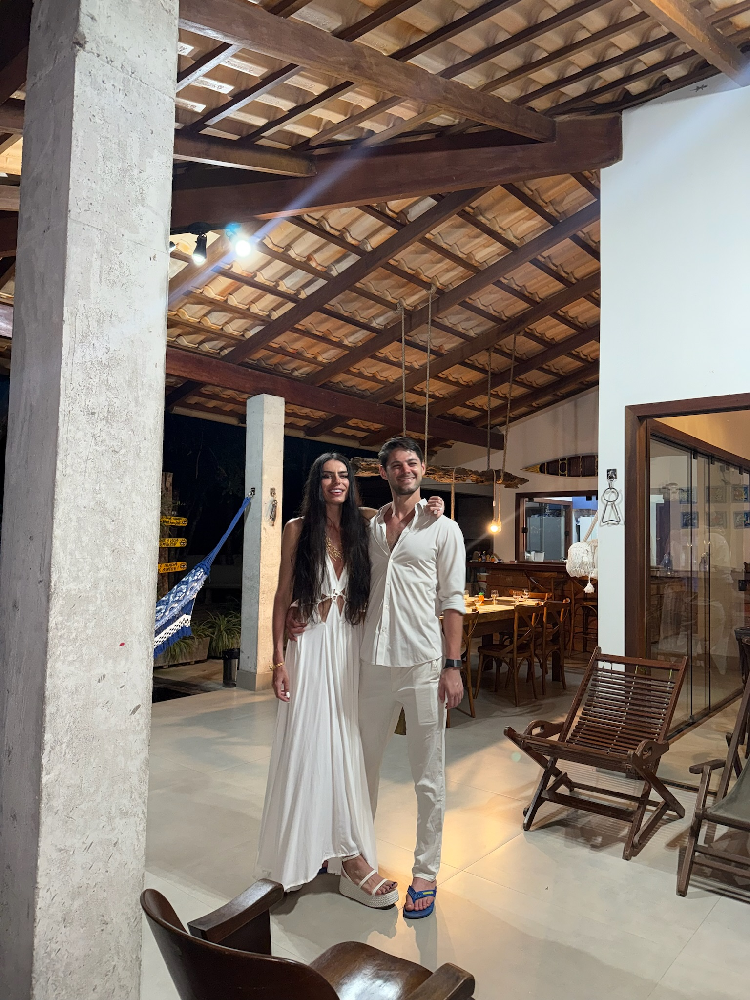
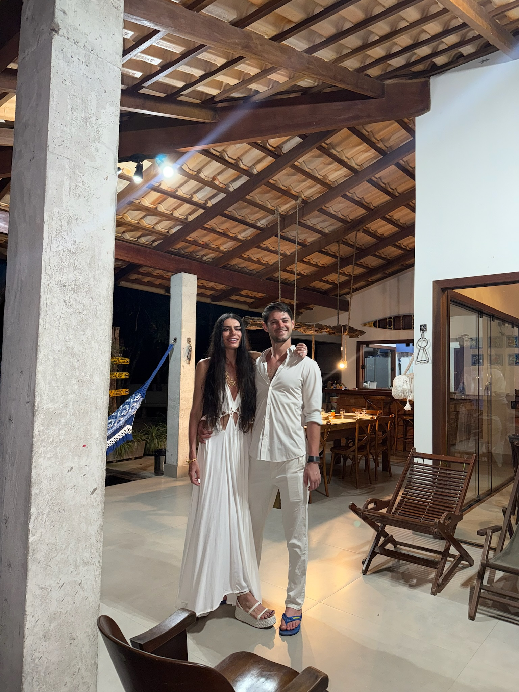


Favorite memory
NYE 2025.
Favorite thing about Jack
Hair in his eyes Jack.
Friends and family share their favorite memories and what makes you uniquely you.
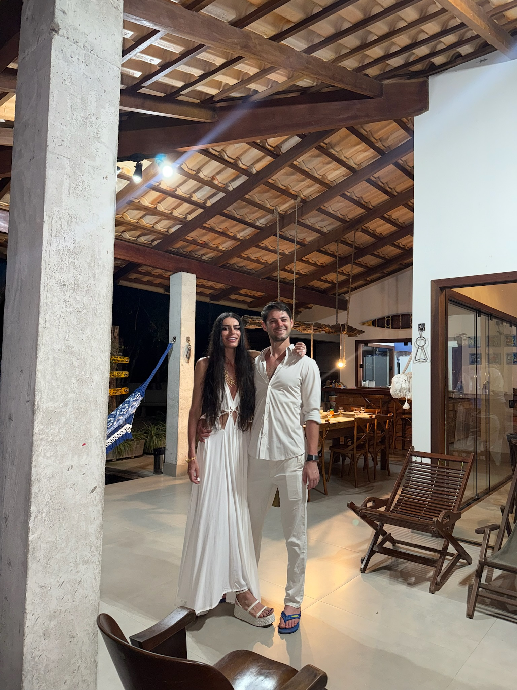
NYE 2025.
Hair in his eyes Jack.


He put diesel in our car then hitchhiked home and left the keys out now broken car in the random persons car. And then we started a diesel equipment repair business.
The most selfless person I know! And puts up with me far more than any reasonable person should.


The time he and his brothers took me wine tasting in the north fork for my birthday, and we stopped at an alpaca farm and he got bit.
I love Jack's sense of humor, the very first thing he ever said to me was describing someone I worked with as an archetypal lesbian and it made me laugh so hard I still remember it perfectly. He's always in a good mood and fun to joke around with!
My favorite memory of him is hard. There's a lot. His sr great Year lax season and how he handled a tough loss after a crazy good season. Nonchalantly winning the Connecticut state chess championship, crushing my client's kid who threw a hissy fit. Driving with him to test out the route to Cameron in Houston before his first day of work. Correcting the guide at the museum of natural history who misidentified a diplodocus. Playing with Zoe, which he wont recall, he was too young. Maybe watching the history channel w him at a motel in bar harbor—Doubt he remembers, mattered a lot to his life.


a) Jack (age 9) falling over in long peals of laughter whenever we'd read, or I said, the words "blue footed boobies."
b) Grandpa on the piano playing Buddy Holly's "Raining in my Heart," the 3 of us sitting on that black piano bench screeching out the words at the top of our lungs.
Sooooo many unique things. Jack is a very serious human being. Super Serious. Jack is a very silly (in the very best way) human being. Super Silly. Both are very true.


Some of the best memories in my life are with Jack, starting with a party in the Hamptons that made the NY Times in 2013 and spans our adventures through Miami, NYC, and Hamptons.
Jack has a deep commitment to his friends, and I am honored to call him one of my best friends. The connection is beyond a fun friend, he is someone who inspires me, and is there for me in tough times. He is someone I can trust with my life and I would walk through walls for him, as I know he would do for me.
 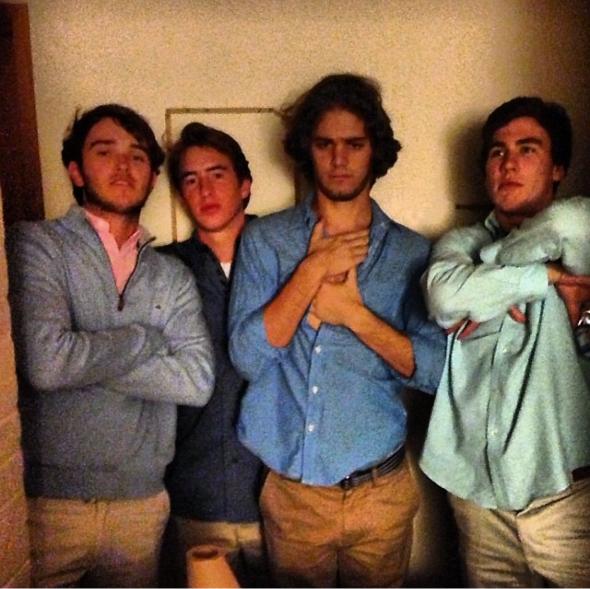
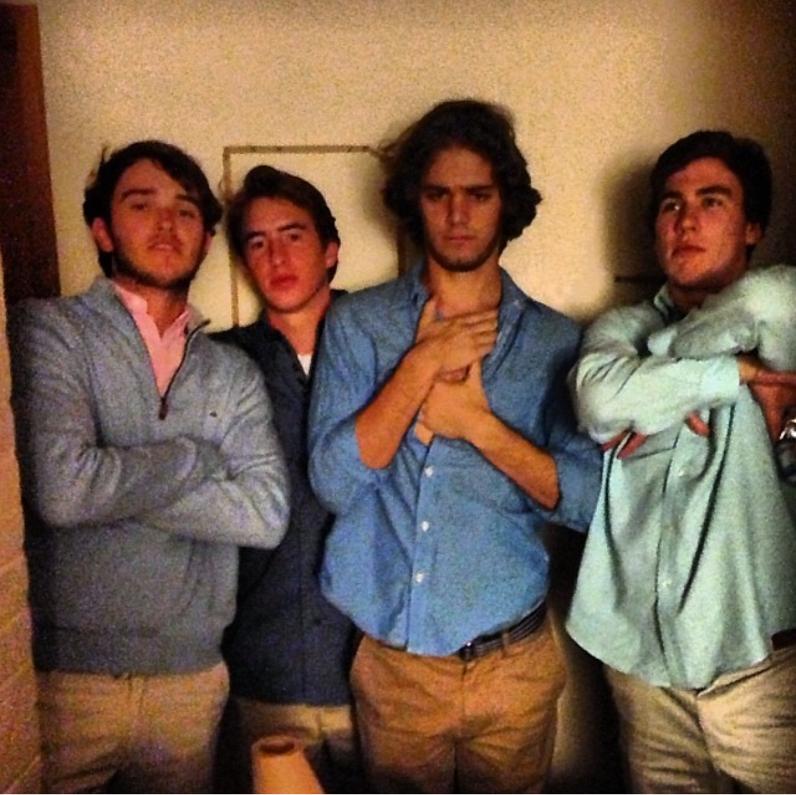
My favorite memory with Jack is both of us trying not to throw up from altitude sickness in vail at dinner with my dad after a week of drinking in Cabo.
My favorite unique thing about him is his love of reggaeton despite being the whitest person I know.
Favorite memory is tough because there are just so many that have us lying on the floor laughing. But I think this encapsulates Jack. At five years old, he confidently walked away with the head of admissions at Trinity, explaining to her how he was going to be a paleontologist for Halloween and wondering what she was going to be.
I love that Jack is uniquely self-aware and oblivious. He honors his true self, 'leaning into his weirdness' as he once put it. He has somehow managed to thread the needle, so this reads as charming and "just Jack" and we love him for it. Personally, I adore that he is always game for an adventure or excursion outside of his comfort zone. This is us on the top of Angels Landing, Zion National Park.
 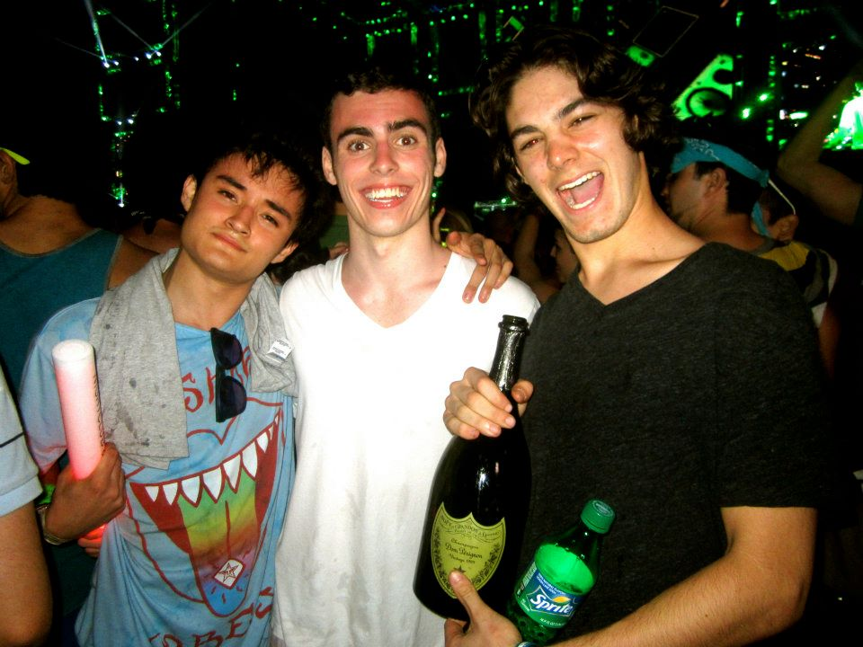
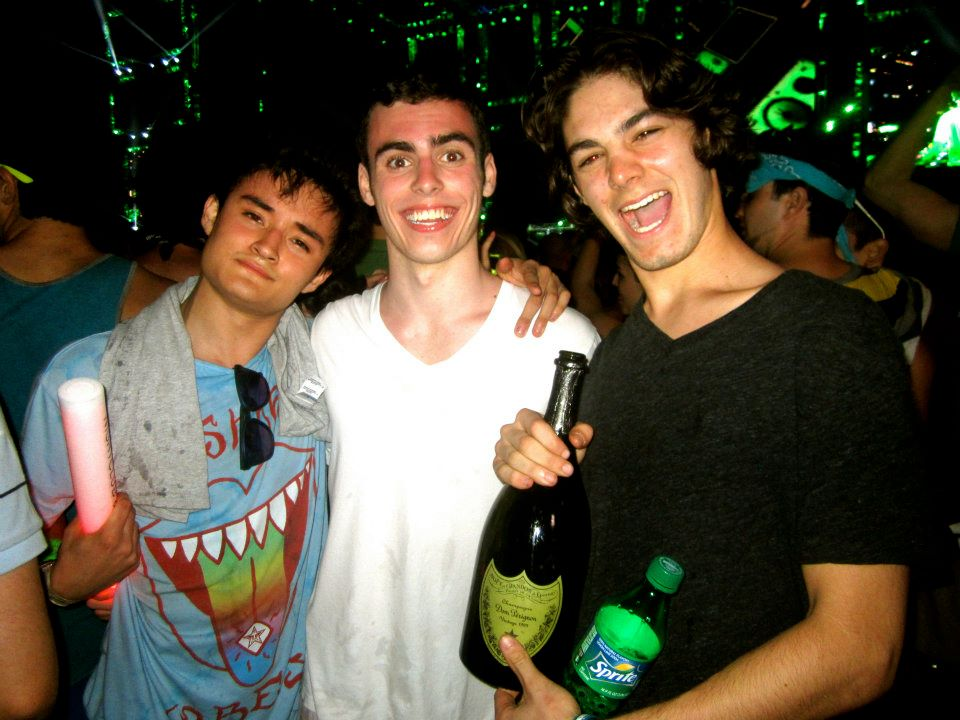
My friendship with Jack has lasted 25 years now so hard to put into one sentence.
Jack is an incredibly intelligent person who is purposeful in everything that he does including being your friend. Goes out of the way to spend time and catch up with you and when you're with him you know it matters a lot to him. He's made me think about things I didn't know exist all while demonstrating he'd be there through thick and thin.
Alborz connected me to Jack back in December 2023 we got a beer at Gadfly some dive bar near where I was living in Chelsea. We have similar jobs but beyond that we both immediately connected like long lost friends has been one of my favorite people ever since.
Jack's a rare mix of extreme intelligence, curiosity, self awareness and humility. Ultimately means you can have real conversation with him but it always feels genuine and ends up devolving into a good time.

 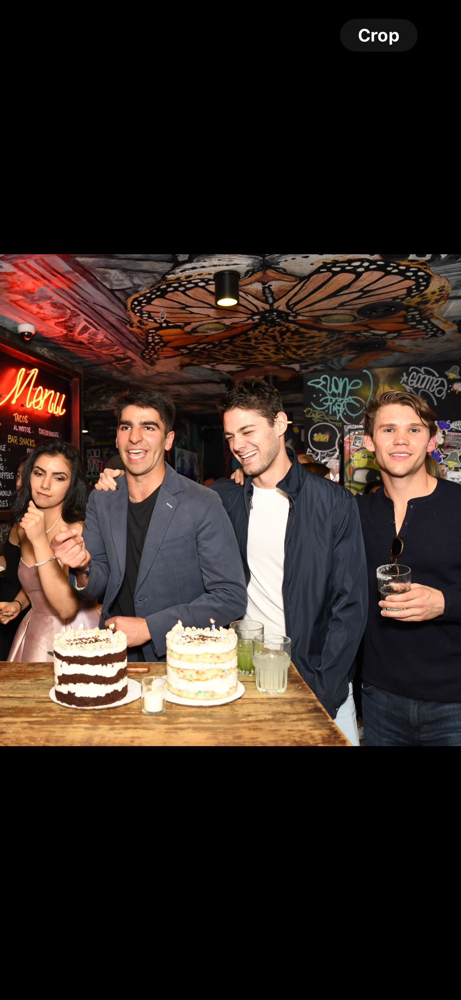
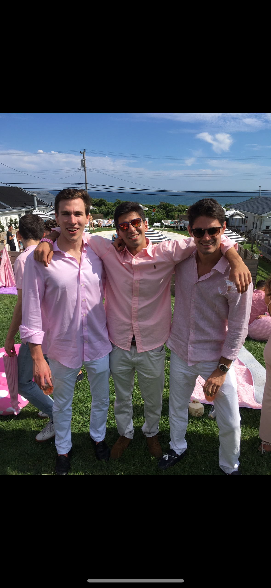
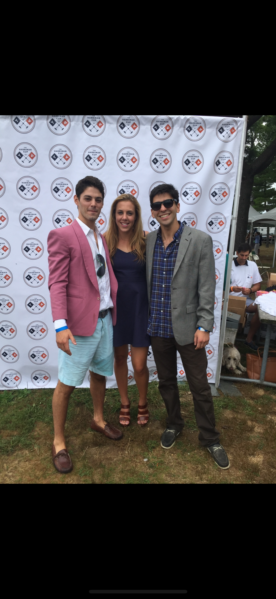
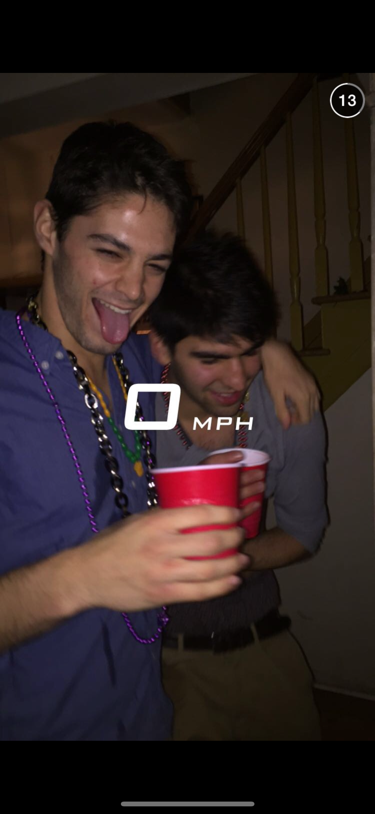
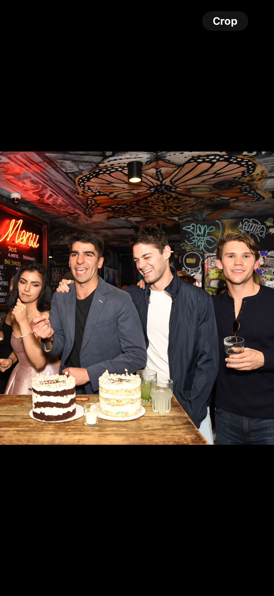
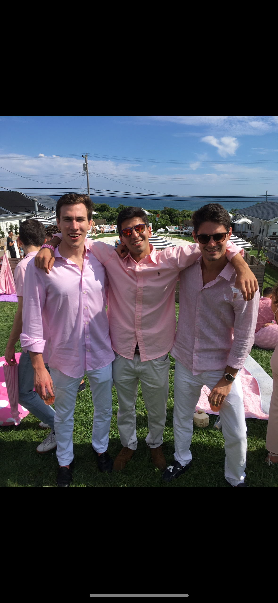
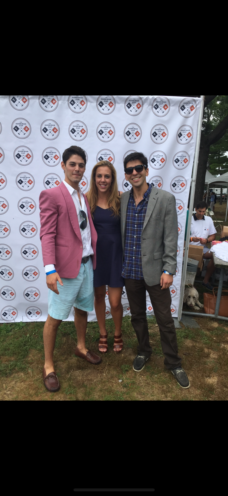
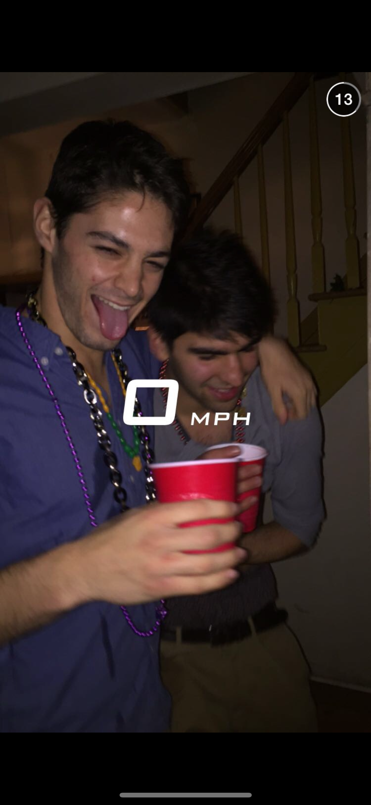

One of my favorite memories — testing out our homebrew concoction at the Yale Vanderbilt polo game for the first time.
That I can say a few random words and incapacitate Jack laughing and saying "what dude?!"
Classic memories playing nba jam at his winos on 88th after preseason soccer— and when he randomly had a black kitten for a few days (named rocky?) but more specifically being high as hell at his crib when i introduced him to "zeitgeist: the movie" about the conspiracy of how bush did 9/11 and him being like umm turn this shit off immediately lol
Someone unique i love about him is how he stands lol, hard to explain but easy to recognize
And also most improve player in giving daps over the past 15 years easily.

Beer die in the hamptons / shenanigans in NY.
Haha he's unique alr. A type of friend I would never find in Argentina (compliment way). Unique mix of funny, blunt, thoughtful / smart, kind / generous, and autistic. Lol jk on last one, love you man happy birthday!

This is literally one of Jeff and my favorite pics from our wedding. Jack wanted to tell me something and the photographer got the perfect moment. We always entertained the big questions together - are there secret passages in Irene and Jerry's Smithtown house, whatever logic puzzle of the day Jack knew and we had to wrap our brains around.
We appreciated his thoughtful inquisitiveness then and now. Thanks for putting this together and see you soon!
My favorite memory with Jack is our tex mex dinner in Austin where we talked about our developing life philosophies for probably three hours over the best dinner we'd ever had (fish al Diablo at a restaurant I'm sure Jack remembers the name of). This was one of maybe a hundred long life chats we've had over the years that serve as snapshots of who we were at given times in our lives, chats that have helped made me who I am today.
I love that Jack is uniquely himself, in all his glory and weirdness. He knows who he is and what he believes in and he lives his values day in day out.
And I love that when Jack asks how you are he really cares, he doesn't want surface level stuff, he wants to dig into what's happening in your life, to share in your successes and your struggles with you.
 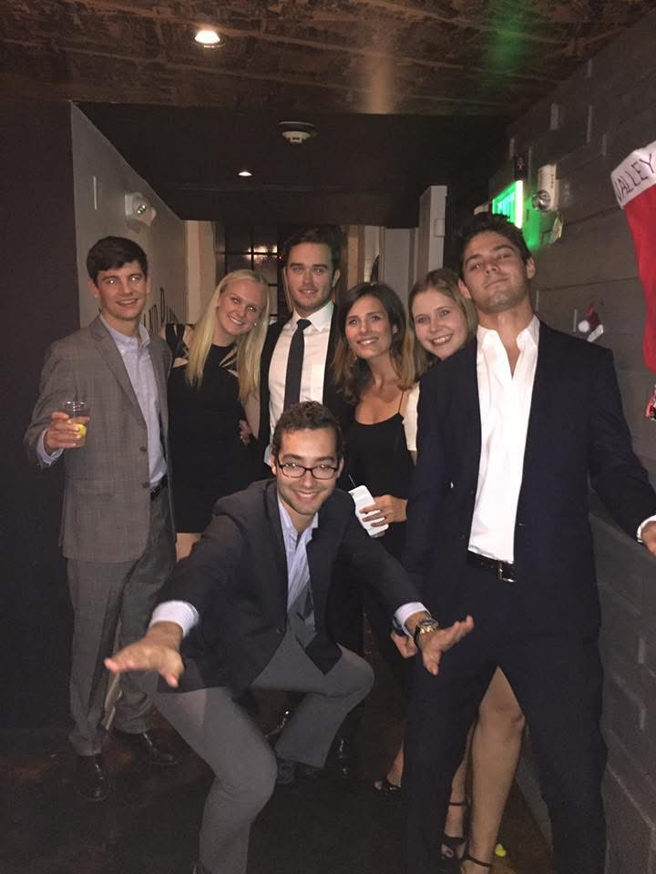
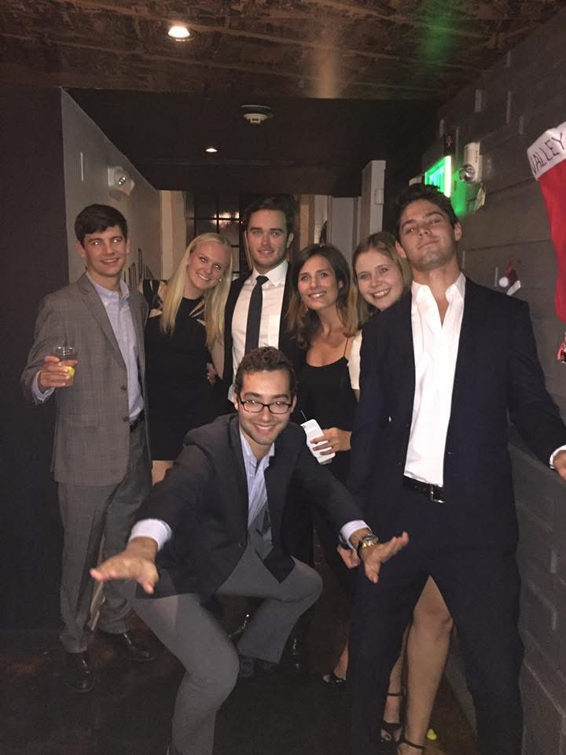
I think one unique thing about Jack that I really admire is that he is always brings a very positive and upbeat energy which makes any event more fun - sharing a few group photos to illustrate that!


He's a very unique guy that isn't afraid of going against the mainstream or standing out. He has a lot of well-researched and strongly held opinions, which he often takes too far. Photo evidence showing him taking his Huberman/mindfulness/health beliefs too far in public (eventually leading to his inability to walk last year).
So many but serious note I've rly cherished the times him and I got one and one time after squash at the Yale club chatting in the sauna.
Which leads into the unique thing I love about wino which is that he's both brilliant and sweet (albeit awkward about his emotions sometimes haha).
A secret confession which is that harry and i tossed a perfume holder out his parents bathroom window in high school, and we're sorry.
A special thing about him is we have had thousands of conversations and debates, and I have never been bored in over 20 years.


In the 5th grade we used to build exploding pens and highlighters together. Jack figured out you could take the spring out and put it back in the wrong order so that when you press the top the pen shoots open and the parts fly everywhere. The highlighters had an even bigger/stronger spring. I think Jack figured this out when we were bored in Hebrew school. We then turned it into a mini business and sold a few of the exploding highlighters for $5 until they got banned by teachers because people were shooting pens across the classroom.
 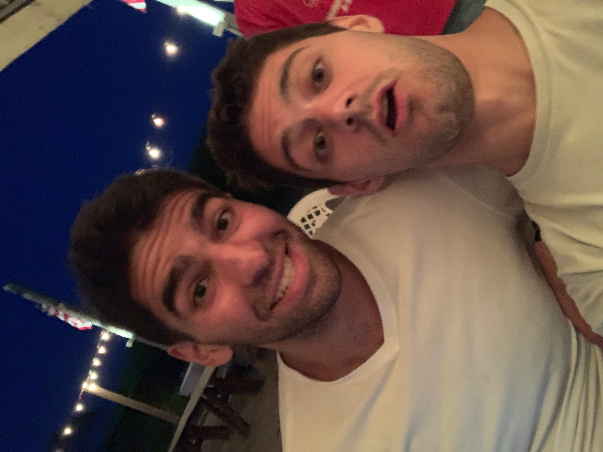
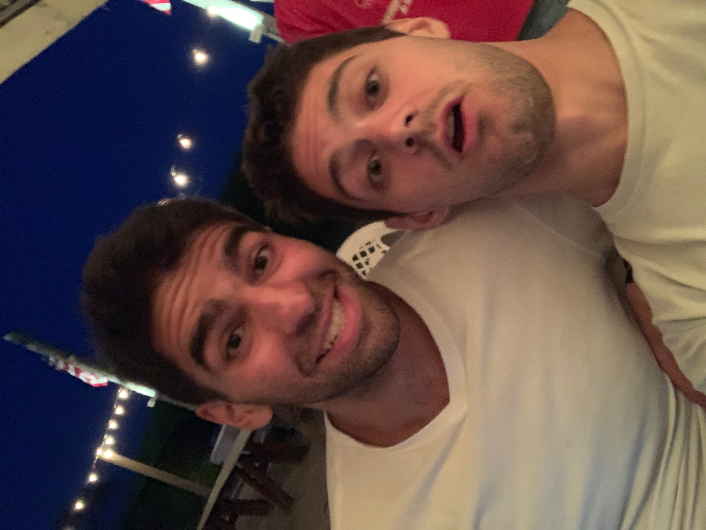

Riding mopeds through the hills in Thailand on our post-grad trip.
He's so knowledgeable and always learning more, and brings interesting topics to any conversation.
When Jack decided to fill up his car with diesel.

Wrench vs goal post.
His hair but that's gone now.
N/A
N/A

 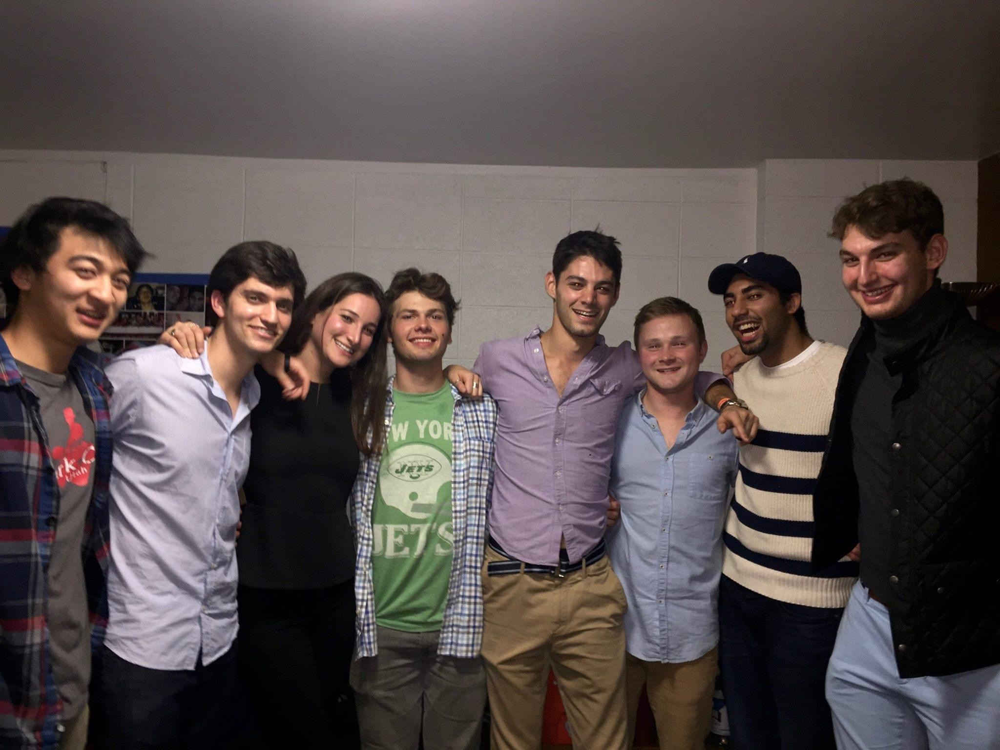
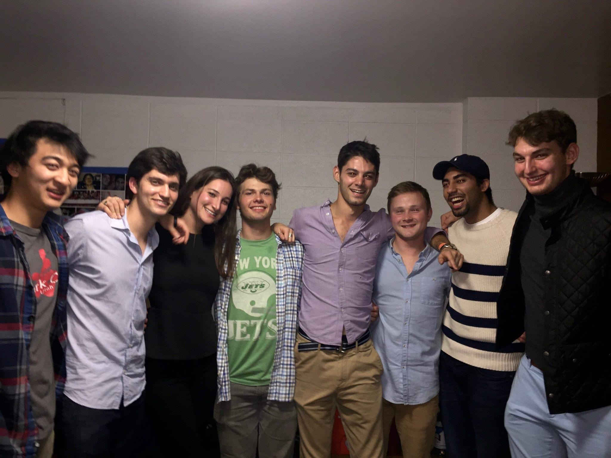
N/A
N/A
We are lucky to love you,
Your family & friends
March 28, 2025